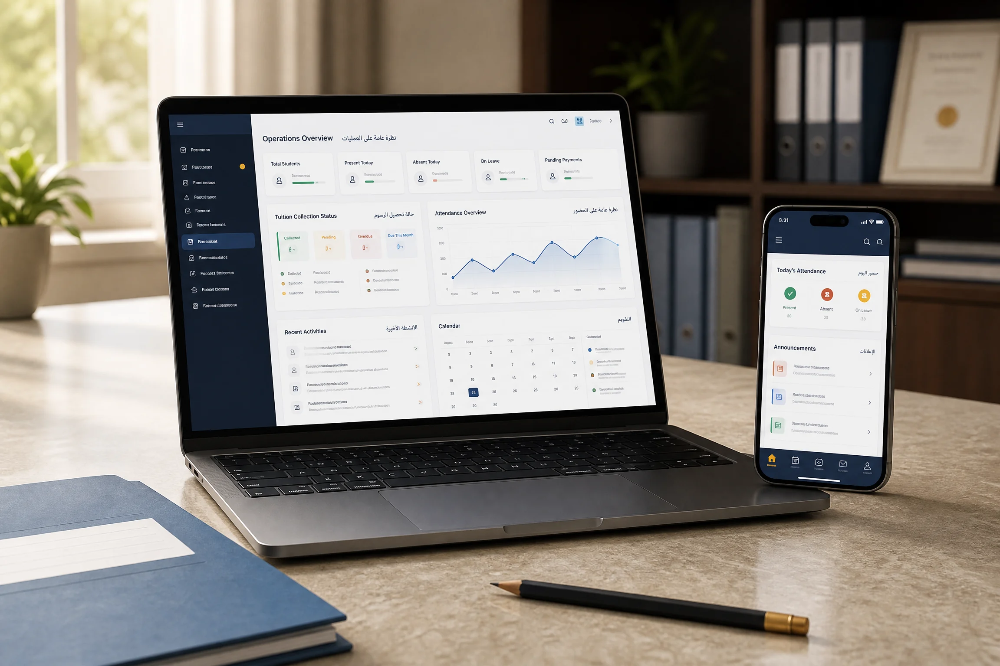
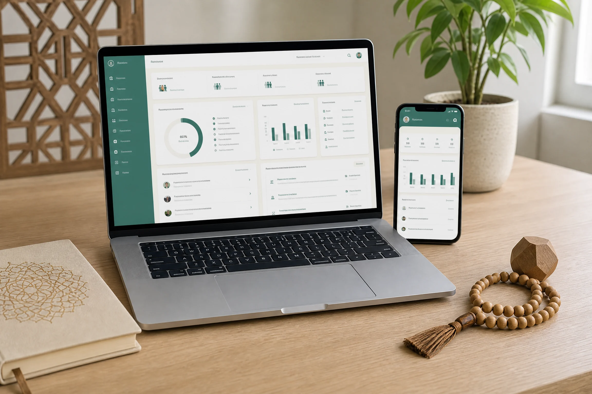
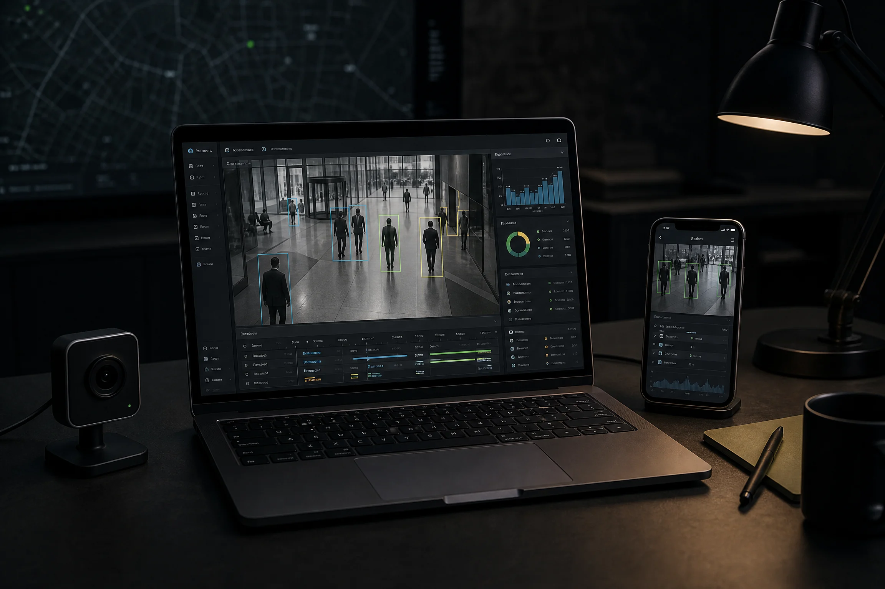
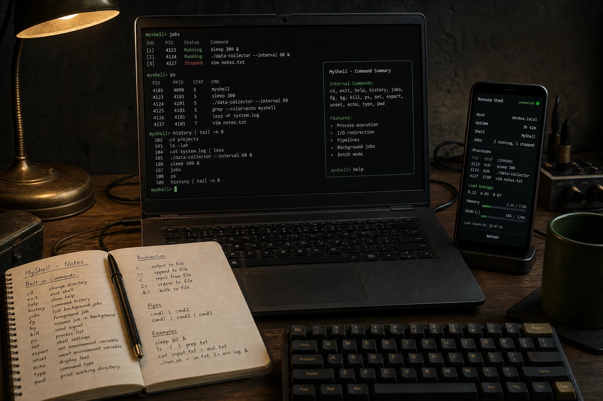
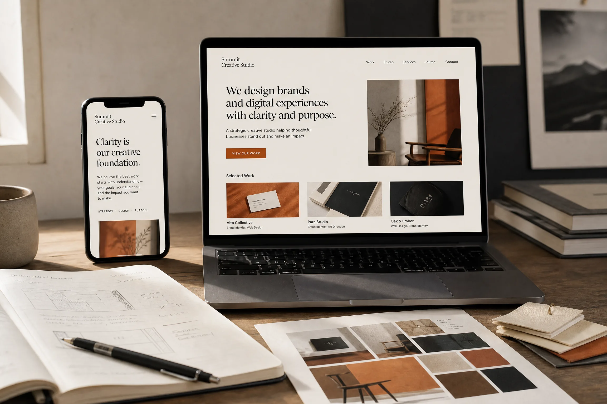
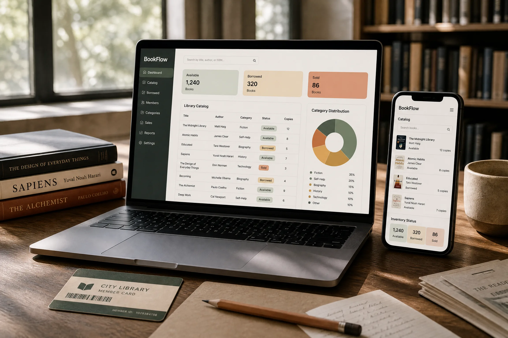
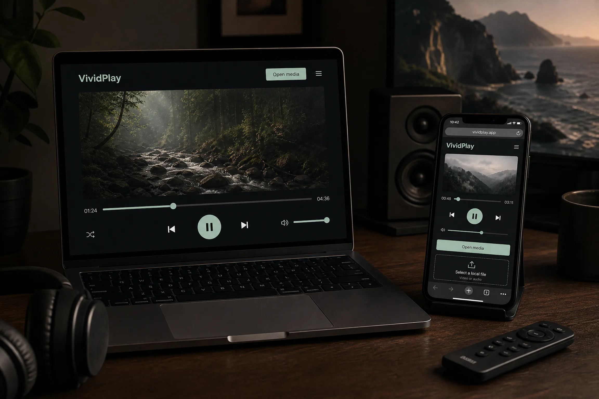
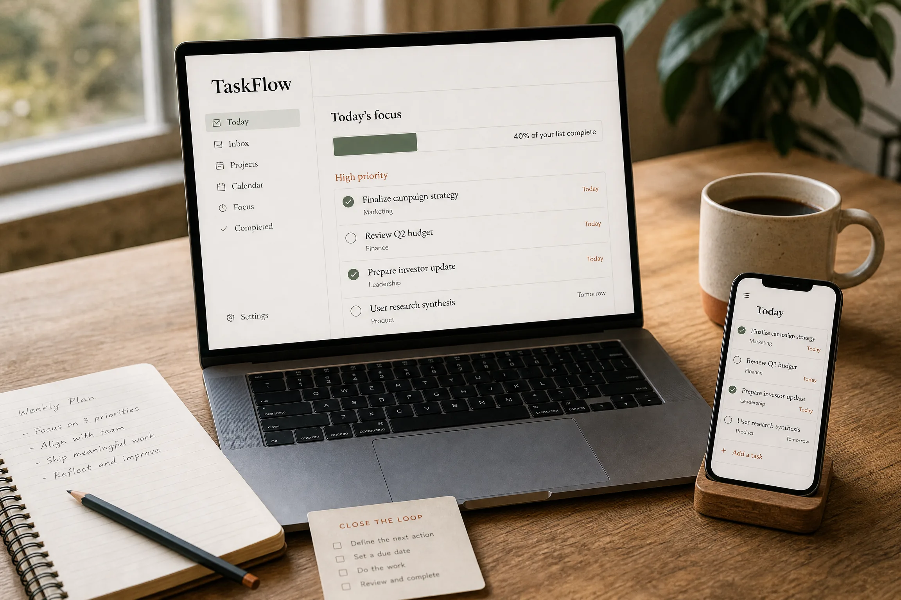
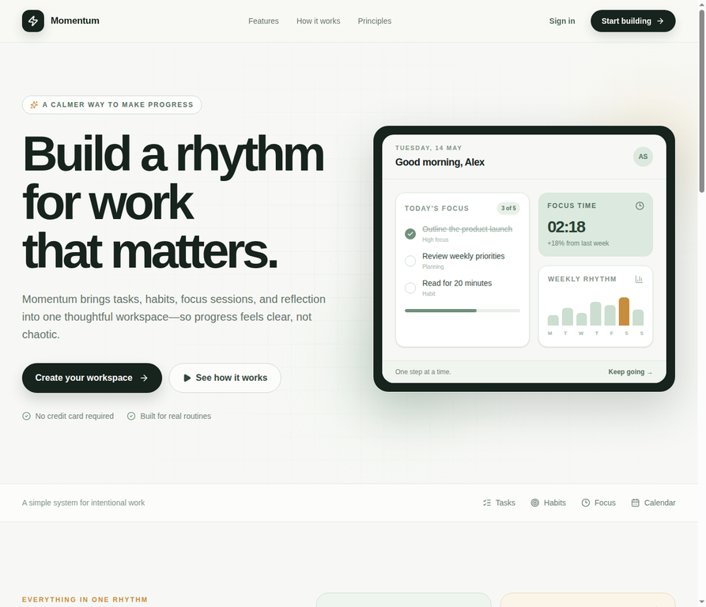
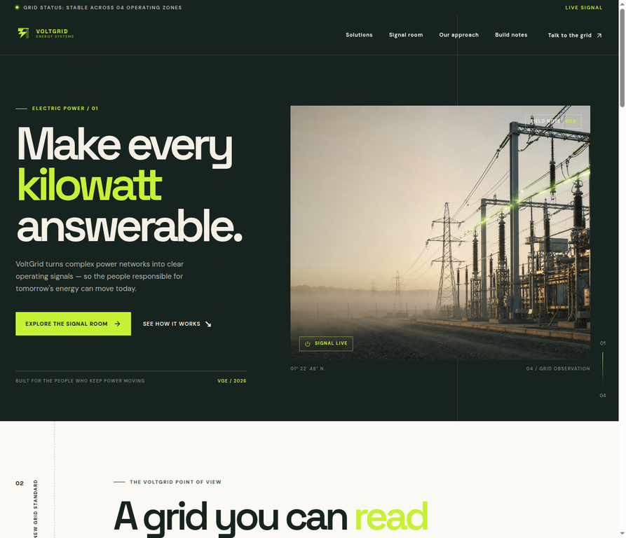

01
Backend systems
APIs, domain logic, background jobs, real-time flows, authentication, authorization, and production service boundaries.
Python · Django · DRF · FastAPI · Laravel · WebSockets
Mahmoud H. Almodalal · Backend Engineer
Computer Engineer focused on backend architecture, multi-tenant SaaS, production APIs, and practical AI integrations. I care about clear boundaries, resilient data flows, and software that remains useful under real operating constraints.
expertise
The tools change by project. The approach stays consistent: explicit architecture, observable behavior, and simple operational paths.
APIs, domain logic, background jobs, real-time flows, authentication, authorization, and production service boundaries.
Relational modeling, caching, asynchronous processing, containerized delivery, and deployment workflows built for maintainability.
AI features connected to real product workflows rather than isolated demos: retrieval, document ingestion, messaging, and computer vision.
Enough frontend depth to ship complete workflows, work effectively across boundaries, and design offline-capable experiences.
background
Teaching Calculus, Logic Design, and Computer Architecture to computer science students.
Built and deployed a bilingual multi-tenant school-management SaaS with Clean Architecture, a 32-entity PostgreSQL schema, Arabic full-text search, role-specific dashboards, offline support, automatic sync, and production CI/CD.
Built responsive interfaces and server-side functionality with HTML, CSS, JavaScript, Bootstrap, PHP, and Laravel. Worked with MySQL and Oracle DB for management and optimization.
📄 View Internship Proof ↗Developed face-detection and face-recognition workflows for video footage, focusing on practical AI integration, processing speed, and model performance.
Completed intensive Python training focused on Machine Learning, AI, algorithms, and supervised software-project development.
📄 View Experience Certificate ↗selected work

Bilingual school-operations SaaS that unifies attendance, tuition, messaging, and role-based dashboards—built multi-tenant with offline sync for unreliable networks.

Offline-first Quran center platform replacing paper logs with memorization tracking, automated PDF report cards, and targeted family updates for 300+ students.
Bilingual AI support workspace that grounds answers in business documents, routes WhatsApp, SMS, and email conversations, and escalates complex cases to human agents.
selected engineering work
Seventeen focused projects that demonstrate applied AI, backend systems, product design, automation, and technical product development.

Applied computer-vision system that detects, tracks, and recognizes faces in video while turning movement into reviewable analytics.
Django bookstore that takes a customer from search to checkout, with authentication, cart management, and sales analytics for administrators.
Administrative web app for turning student registration and attendance into a searchable, reportable workflow.

C-based Unix shell built to explore process control: built-ins, external commands, redirection, background jobs, and batch execution.
Python automation tool that turns an unstructured folder into an organized archive by classifying PDF, DOCX, and XLSX files recursively.
Java desktop attendance tool for recording sessions, reviewing presence, and producing clear summaries from one structured workflow.

Editorial studio website that turns brand strategy, visual identity, and digital experiences into one clear, memorable point of view.

Polished Django library dashboard for cataloging books, tracking available, borrowed, and sold stock, and keeping lending activity visible at a glance.

Calm JavaFX media player for local video and audio with playback controls, seeking, volume, fullscreen, drag-and-drop, and a lightweight browser companion demo.

Calm productivity workspace for seeing what is next, focusing today’s priorities, tracking momentum, and closing open loops without visual noise.

Intentional productivity workspace that brings tasks, habits, focus sessions, calendar planning, and weekly reflection into one calmer rhythm.

Editorial energy-operations interface that turns complex power networks into readable signals for demand, capacity, storage, and the next field decision.
Conversion-focused real-estate landing page designed to turn property discovery into a clear, confident enquiry journey.
Minimal task-management product built around fast capture, clear priorities, lightweight organization, and a low-cognitive-load dashboard.
Extensible content-management backend for licensed Quranic resources, versioning, publisher workflows, developer APIs, and usage analytics.
Django and DRF marketplace backend shaped around clear specifications, a deliberate data model, containerized delivery, and dependable APIs.
Audio-based AI system that evaluates recited Qur'an verses with explainable pronunciation, Tajweed, and fluency score breakdowns.
credentials
testimonials
reach out
I'm open to backend and AI engineering roles, SaaS collaborations, and products where reliable systems and thoughtful automation matter.